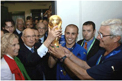

Футбол

Футбол — самый популярный командный вид спорта в мире, целью в котором является забить мяч в
ворота
соперника большее число раз, чем это сделает команда соперника в установленное время. Мяч в ворота
можно забивать ногами или любыми другими частями тела (кроме рук).
История возникновения и развития футбола (кратко)
Точной даты возникновения футбола не известно, но можно с уверенностью сказать, что история футбола
насчитывает не одно столетие и затронула немало стран. Игры с мячом были популярны на всех
континентах, об этом говорят повсеместные находки археологов. В Древнем Китае существовала игра,
известная как «Цуцзюй», упоминания о которой были датированы вторым веком до нашей эры. По заявлению
ФИФА в 2004 году, именно она считается наиболее древней из предшественников современного футбола.